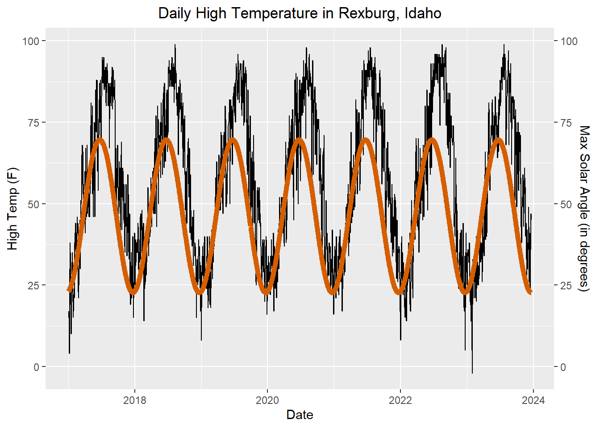
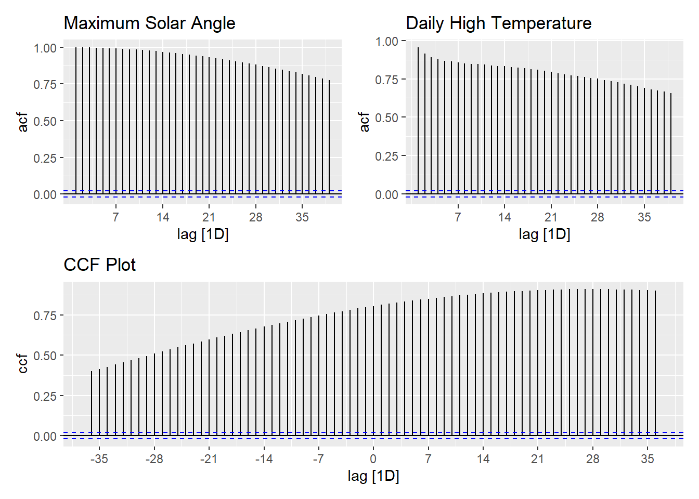

Leading Variables and Associated Variables
Chapter 3: Lesson 1
Learning Outcomes
Explain the purpose and limitations of forecasting
- Define lead time
- Define forecasting
- Differentiate causation from correlation
Explain why there is not one correct model to describe a time series
- Explain why there can be several suitable models for a given time series
Use cross-correlation analysis to quantify lead/lag relationships
- Explain forecasting by leading indicators
- Define the population k-lag ccvt
- Define the population k-lag ccf
- Define the sample k-lag ccvt
- Define the sample k-lag ccf
- Estimate an ccf for two time series
- Interpret whether a variable is a leading indicator using a cross-correlogram
Evaluate the limitations of forecasting models based on past trends
- Explain how unexpected future events may invalidate forecast trends
- Avoid over-extrapolation of fitted trends beyond reasonable time horizons
Preparation
- Read Sections 3.1-3.2
- Note: There is a typo in the book on page 47. Equation (3.5) gives the sample ccf, not the sample acf.
Learning Journal Exchange (10 mins)
Review another student’s journal
What would you add to your learning journal after reading another student’s?
What would you recommend the other student add to their learning journal?
Sign the Learning Journal review sheet for your peer
Small Group Discussion: Why Forecast? (5 min)
Class Activity: Cross-Correlation (15 min)
When one time series leads another, we can use the one to predict the other–at least in the short term. In this example, we will examine the relationship between the maximum angle the sun makes with the horizon and the daily high temperature in Rexburg, Idaho.
The figure below illustrates the daily high temperature in Rexburg, Idaho (in black) and the angle of the sun with the horizon at solar noon (in red).
Notice that the red curve “leads” the black time series. The peaks and valleys first occur in the maximum solar angle and then days later in the daily high temperatures.
Sample Cross-Covariance Function (ccvf)
In Chapter 2, Lesson 2, we explored the covariance of a time series with itself, shifted by \(k\) units of time. Now, we will consider a similar idea, where we compare one time series that has been shifted \(k\) units to another time series.
The sample cross-covariance function (ccvf) is defined as:
\[ c_k(x,y) = \frac{1}{n} \sum_{t=1}^{n-k} \left( x_{t_k} - \bar x \right) \left( y_t - \bar y \right) \] We can compute the acvf of a time series with itself:
\[ c_k(x,x) = \frac{1}{n} \sum_{t=1}^{n-k} \left( x_{t_k} - \bar x \right) \left( x_t - \bar x \right) \]
In particular, if \(k=0\), this reduces to:
\[ c_0(x,x) = \frac{1}{n} \sum_{t=1}^{n-k} \left( x_{t} - \bar x \right)^2 \]
Sample Cross-Correlation Function (ccf)
The sample cross-correlation function is defined as:
\[ r_k(x,y) = \frac{ c_k(x,y) }{ \sqrt{ c_0(x,x) c_0(y,y) } } \]
acf_solar <- ACF(rexburg_daily_ts, y = max_solar_angle) |> autoplot() +
labs(title = "Maximum Solar Angle")
acf_temp <- ACF(rexburg_daily_ts, y = high_temp) |> autoplot() +
labs(title = "Daily High Temperature")
joint_ccf_plot <- rexburg_daily_ts |>
CCF(y = max_solar_angle, x = high_temp) |> autoplot() +
labs(title = "CCF Plot")
(acf_solar + acf_temp) / joint_ccf_plot
|
|
|
|
Warning
We need to figure out why this code won’t run. Tyson, will you please look at it?
Important
Done! I’m not sure which of these needed to run so eval is still set to false on everything but the code doesn’t throw errors anymore.
Warning
Tyson, please look at line 223. I am not sure why it runs for you and not me.
solar_decompose <- rexburg_daily_ts |>
model(feasts::classical_decomposition(max_solar_angle), type = "add") |>
components()
temp_decompose <- model(rexburg_daily_ts, feasts::classical_decomposition(high_temp)) |>
components()
solar_random <- ACF(solar_decompose, random) |> autoplot()
temp_random <- ACF(temp_decompose, random) |> autoplot()
random_decompose <- select(solar_decompose, quarter, random_app = random) |>
left_join(select(temp_decompose, quarter, random_act = random))
joint_ccf_random <- random_decompose |>
CCF(y = random_app, x = random_act) |> autoplot()
(solar_random + temp_random) / joint_ccf_randomjoint_ccf_random <- random_decompose |>
CCF(y = random_app, x = random_act) |> autoplot()
joint_ccf_randomrandom_decompose |>
CCF(y = random_app, x = random_act)Compare the two plots below. The tab on the left shows the relationship between the maximum solar angle on a specific day with the high temperature for that day. The tab on the right provides a scatter plot of the maximum solar angle from 28 days ago and the daily high temperature for the current day.


Small Group Activity: Computing the Sample CCF (25 min)
Using any tool, except pre-defined functions in R, find the ccf for the following data.
| x | y |
|---|---|
| 17.6 | 65.1 |
| 20.7 | 1.9 |
| 25.7 | 116.6 |
| 24.9 | 130.6 |
| 25.1 | 163.4 |
| 26.3 | 227.3 |
| 22.2 | 219.1 |
| 17.1 | 217.2 |
| 15.6 | 185.7 |
| 14.6 | 104.6 |
| 16.9 | 129.7 |
| 16.8 | 70.7 |
| 19.1 | 16.0 |
| 21.2 | 98.5 |
| 22.5 | 108.3 |
| 27.4 | 135.9 |
You can read these data into R using the following command:
Important
Tyson, will you please see if you can make xy_str (or something that replaces it) print so that it looks like this: (on four lines, with the middle two lines indented?)
So with it in an R chunk like this, they can just hover in the top right corner and copy/paste the code in the correct format that way. I did find a function that will print it like needed and that is shown below
df <- data.frame(
x = c(17.6, 20.7, 25.7, 24.9, 25.1, 26.3, 22.2, 17.1, 15.6, 14.6, 16.9, 16.8, 19.1, 21.2, 22.5, 27.4),
y = c(65.1, 1.9, 116.6, 130.6, 163.4, 227.3, 219.1, 217.2, 185.7, 104.6, 129.7, 70.7, 16, 98.5, 108.3, 135.9)
)df <- data.frame(
x = c(17.6, 20.7, 25.7, 24.9, 25.1, 26.3, 22.2, 17.1, 15.6, 14.6, 16.9, 16.8, 19.1, 21.2, 22.5, 27.4),
y = c(65.1, 1.9, 116.6, 130.6, 163.4, 227.3, 219.1, 217.2, 185.7, 104.6, 129.7, 70.7, 16, 98.5, 108.3, 135.9)
)